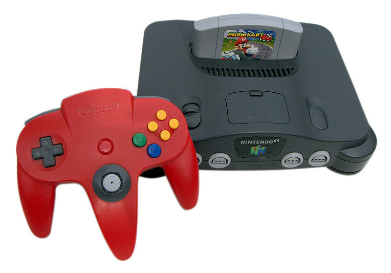

Nintendo 64, 1996
CPU:
NEC VR4300
(MIPS R4300i, 64 bits)
Frequência: 93,75 MHz
Processador gráfico:
Reality Co-Processor
SGI, 64 bits
Processador de som
Memória Unificada
4MB RAMBUS
Unidades vendidas: 35 milhões
Jogo mais vendido: Super Mario 64 (11,62 Milhões)